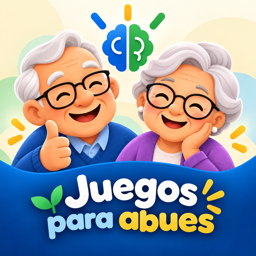

Aviso de privacidad de Juegos para Abues
Última actualización: 27 de octubre de 2026
Juegos para Abues es una app para ejercitar la mente, la memoria y el cuerpo. La hicimos para que sea sencilla y respetuosa: no recopilamos tus datos. No tenemos servidores propios, no usamos analítica, no mostramos anuncios y no te pedimos crear una cuenta.
Lo que se guarda en tu teléfono
Tu nombre o apodo, tu avatar, tus preferencias y tu progreso (retos, estrellas, mejores tiempos y tu jardín) se guardan en tu teléfono.
Respaldo en tu iCloud
Si tienes iCloud activado, la app respalda tu progreso y tus ajustes en tu propia cuenta de iCloud, para que no se pierdan si cambias de teléfono. Ese respaldo lo guarda Apple a tu nombre; nosotros no podemos verlo.
Mi familia y juegos en línea
Si creas un círculo familiar o entras a uno con una invitación, la app usa iCloud (CloudKit) para compartir con las personas de ese círculo tu nombre, tu avatar, tu racha, los retos que haces cada día, tus estrellas y mejores tiempos, los aplausos que mandas y las partidas que juegan juntos. Solo lo ven quienes entraron con el enlace del círculo. La información vive en la cuenta de iCloud de quien creó el círculo; nosotros no tenemos acceso a ella.
Puedes salir de un círculo cuando quieras; quien lo creó puede sacar a alguien o cerrarlo, y entonces deja de compartirse.
Micrófono y reconocimiento de voz
En las actividades de voz puedes grabarte para escucharte. La grabación se queda en tu teléfono, en un archivo temporal que se borra. En «Un minuto de palabras» puedes pedir que el teléfono cuente tus palabras: el reconocimiento se hace en el mismo teléfono y lo que dices no se manda a ningún lado. Solo se usa el micrófono si tú das permiso, y puedes quitarlo en Ajustes.
Notificaciones
Si lo permites, la app te manda un recordatorio diario a la hora que elijas y te avisa cuando te toca en una partida en línea. Puedes apagarlas en la app o en Ajustes.
Imágenes para compartir
Cuando compartes un logro o un dato curioso, la imagen la crea tu teléfono y tú decides a quién mandarla.
Compras
«Abues con chispa» se compra con tu cuenta de Apple. Apple procesa el pago; nosotros no recibimos tu nombre, tu tarjeta ni tus datos de pago. La app solo pregunta al teléfono si la compra está hecha.
Niños
La app no recopila datos de nadie, tampoco de niñas y niños.
Cómo borrar tus datos
En la app, en Perfil, puedes borrar tu progreso (también se borra de tu iCloud). Si borras la app, se borra lo que estaba en el teléfono.
Contacto
Si tienes una duda sobre tu privacidad, escríbenos en tzinitzcan.com/soporte.
Si algún día cambiamos este aviso, lo publicaremos en esta misma página con su nueva fecha.